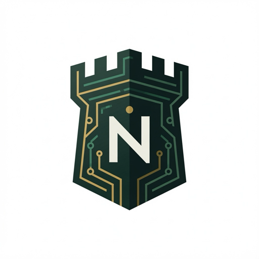

Connect an AI app
The connector lets Claude, Cursor, ChatGPT, and other MCP apps read and update only the scopes you have marked Shared.
Server address
Use this address when an app asks for a remote MCP server:
https://mcp.northkeep.ai/mcp
The previous address, https://northkeep-connector-server.vercel.app/mcp, keeps working for connections that already use it. Both addresses are the same connector. Sign-in is OAuth. The app opens a NorthKeep page and asks for a one-time pairing code. You do not paste an API key into the app.
Set it up
- In the NorthKeep app, open Connect, then Cloud. Cloud Connect is part of the Sync + Cloud Connect subscription.
- Share a scope. NorthKeep shows you what will leave your Mac, and it waits for you to confirm. Private scopes stay on your machine.
- NorthKeep shows a server address and a one-time pairing code. In the AI app, add the server address above. When the app opens the NorthKeep page, enter the code.
- Ask the app to look something up from a scope you shared. It can use the tools below. It cannot see the rest of your vault.
One exception to the confirmation step: if a connected app creates a project in a scope that has no project on your Mac yet, that project arrives already shared, so the app can keep it updated. From then on it is an ordinary shared scope. You can unshare it.
Tools
Every tool is limited to the signed-in account. Read-only tools do not change anything. memory_forget hides a memory and removes it from your vault on the next sync. The other write tools add a memory or create or update a project. None of them call the open web.
| Tool | What it does | Kind |
|---|---|---|
memory_retrieve | Search shared memories for a query. | Read-only |
memory_list | List shared memories. | Read-only |
search | Search shared memories and return short results. | Read-only |
fetch | Read one shared memory by the id search returned. | Read-only |
project_list | List shared projects. | Read-only |
project_get | Read one shared project document. | Read-only |
memory_remember | Save a new memory into a scope you already share. | Write |
project_create | Create a project after you agree to its milestones. | Write |
project_update | Update a project you already have. Passed milestones stay as they are. | Write |
memory_forget | Forget one shared memory by id. A project document cannot be forgotten this way. | Destructive |
What sharing means
The default is private. Sharing is per scope, and you can undo it. Shared text is encrypted on the connector. The connector decrypts it only to answer a request from an app you paired. It does not build search embeddings from your text, and it does not keep a content log. Scope names, entry ids, counts, ciphertext sizes, and timestamps are visible to the service.
An app can write back into a scope you already share. Those writes sync into your vault. A project an app creates in an empty project scope is the exception described above.
Revoke access
- Stop sharing a scope. In NorthKeep, open Connect, then Cloud, and unshare the scope. NorthKeep deletes that scope's rows from the connector. Your vault keeps its own copy.
- Disconnect the app. Remove NorthKeep in the AI app's connector settings. That drops the app's token. You can also revoke it from the app if it offers that.
- Ask us to delete the account. Email support@northkeep.ai and we will delete the shared content and connector records for your account.
The security notes are on the security page. The privacy policy is at northkeep.ai/privacy.